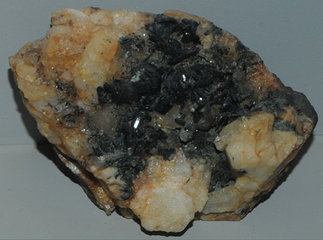

|

| Ba(Fe,Mn,Mg)2Al2(PO4)3(OH)3
This sample of kulanite is displayed in the Smithsonian Museum of Natural History. Kulanite is a phosphate mineral of barium and manganese along with three members of the big 8 elements, iron, magnesium and aluminum. It has the composition Ba(Fe,Mn,Mg)2Al2(PO4)3(OH)3. The sample at left is about 8 cm across and is from Cross Cut Creek, Rapid Creek, Yukon Territory, Canada. It is described as kulanite with penikisite.
|